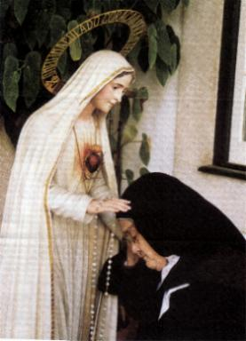

Numa visão retrospectiva, vemos que os Avisos de
Numa visão retrospectiva, vemos que os Avisos de NOSSA
SENHORA, principalmente os de Fátima, não foram atendidos e nem
considerados com urgência, pela maioria do povo e pelas autoridades
de um modo geral. A humanidade não quis se lembrar de que DEUS tem
poder e conhece o presente, o passado e o futuro. O resultado foi que
todos os Avisos se realizaram em seu devido tempo, deixando um rastro
de destruição, miséria e morte, por culpa exclusiva dos pecados da humanidade.
Agora, resta-nos lamentar o ocorrido e buscar com seriedade os caminhos do
SENHOR, lendo e meditando sobre os versículos da Sagrada Escritura,
aceitando as intervenções Divinas, procurando conhecer as Mensagens
e colocando os ensinamentos em nossa vida, a fim de que os erros cometidos
no passado não se repitam no presente e no futuro, porque a Justiça Divina
poderá enviar um terrível castigo, e não haverá tempo para arrependimento.
A citação profética: “quem planta
vento, colhe tempestade” (Os 8,7), têm muita luz
para clarear todas as mentes. DEUS é bom, é PAI, é Amor... Todavia, ELE
também é a própria Lei e é a Justiça. Por isso mesmo, ELE não vai aceitar
indefinidamente a rebeldia e as transgressões
de seus filhos.
NOSSA
SENHORA, principalmente os de Fátima, não foram atendidos e nem
considerados com urgência, pela maioria do povo e pelas autoridades
de um modo geral. A humanidade não quis se lembrar de que DEUS tem
poder e conhece o presente, o passado e o futuro. O resultado foi que
todos os Avisos se realizaram em seu devido tempo, deixando um rastro
de destruição, miséria e morte, por culpa exclusiva dos pecados da humanidade.
Agora, resta-nos lamentar o ocorrido e buscar com seriedade os caminhos do
SENHOR, lendo e meditando sobre os versículos da Sagrada Escritura,
aceitando as intervenções Divinas, procurando conhecer as Mensagens
e colocando os ensinamentos em nossa vida, a fim de que os erros cometidos
no passado não se repitam no presente e no futuro, porque a Justiça Divina
poderá enviar um terrível castigo, e não haverá tempo para arrependimento.
A citação profética: “quem planta
vento, colhe tempestade” (Os 8,7), têm muita luz
para clarear todas as mentes. DEUS é bom, é PAI, é Amor... Todavia, ELE
também é a própria Lei e é a Justiça. Por isso mesmo, ELE não vai aceitar
indefinidamente a rebeldia e as transgressões
de seus filhos.
Relembrando as ocorrências do inicio
do século, vemos que os fatos acontecidos não serviram de lições e ensinamentos
para a humanidade, que continuou despreocupadamente a se interessar apenas pelos
seus projetos e a se orientar por idéias racionalistas e materialistas, sem cultivar
as necessidades do espírito e afastando-se deliberadamente de DEUS.
Ainda naquela ocasião, Nossa
MÃE SANTÍSSIMA percebendo o que se delineava no futuro, pediu-nos maternalmente:
“A Consagração da Rússia a MEU IMACULADO
CORAÇÃO e a Comunhão Reparadora no primeiro sábado de cada mês. Se
atenderem a Meus pedidos a Rússia converter-se-á e terão paz”...
Estes pedidos não foram
considerados em sua totalidade.
Então, presenciamos a Rússia
crescer e fortificar-se, e tornar-se uma grande potência mundial. Deliberadamente
fechou as suas portas a DEUS, proibindo a prática religiosa na União Soviética e
escancarou os seus acessos e todas entradas à Satanás. Desenvolveu
as industrias, principalmente a indústria bélica, a fabricação de
armamentos, munições, aviões, tanques, navios, submarinos, foguetes,
impondo-se militarmente, expandindo os seus territórios, anexando diversas nações
que adotaram o regime comunista, formando o chamado “bloco socialista”.
Mais uma vez, a profecia de
NOSSA SENHORA se realizou:
 “Se não (atenderem aos Meus
pedidos, a Rússia) espalhará seus erros
pelo mundo, promovendo guerras e perseguições à Igreja”.
“Se não (atenderem aos Meus
pedidos, a Rússia) espalhará seus erros
pelo mundo, promovendo guerras e perseguições à Igreja”.
Em nosso Tempo, embora os
Avisos Divinos continuem a chegar com frequência, fazendo-nos compreender
que caminhamos para um clímax, para um grande acontecimento que transformará
a existência do mundo, a humanidade permanece do mesmo modo, indiferente.
A maioria não se interessa pelas necessidades do espírito e mantém-se distante
dos acontecimentos sobrenaturais, enquanto alguns, até colocam resistência
à difusão das Mensagens, criticando ferozmente as Aparições.
O Projeto Divino
estabeleceu um perfeito equilíbrio na Natureza e na Humanidade, para que todas
as coisas permanecessem ordenadas e organizadas, conforme a Santíssima
Vontade do CRIADOR.
A Natureza, sempre obediente,
manifesta-se estritamente dentro dos Planos de DEUS.
A Humanidade, ao contrário, é rebelde,
ambiciosa e repleta de fraquezas, desvirtua os padrões estabelecidos pelo
CRIADOR, excedendo em todos os limites, cultivando uma “liberdade” cativa
do pecado, inclusive interferindo e degradando a Natureza, que é
benéfica e essencial à vida.
O momento exige reflexão...
A indiferença manifestada pelas pessoas, em não se interessarem em ler
a Sagrada Escritura e conhecer a Vontade do CRIADOR, em não buscar
informações sobre as revelações Divinas, não vai colaborar para que elas
tenham tranquilidade e paz espiritual, pretendendo ficar distante dos
acontecimentos. O maligno esconde a verdade e ilude através das tentações,
criando enredos e situações que não condizem com a verdade.
Os ensinamentos da Igreja e as Manifestações Sobrenaturais são
oferecidas à todos e são indubitavelmente, benefícios para todas as pessoas.
Assim sendo, atravessamos uma excelente oportunidade para procurarmos
compreender as palavras de nossa MÃE SANTÍSSIMA e seguirmos os
seus maternais conselhos, que com tanta diligência e carinho ELA coloca a
disposição de todos nós. Esta providência é importante, considerando as trevas
que envolve o mundo, onde impera a ganância, a vaidade, os interesses e a
sensualidade, e onde se vê diariamente que as forças do maligno procuram
influenciar as pessoas e leva-las ao abismo espiritual e a perdição moral.
No conteúdo das Mensagem de NOSSA SENHORA, não é difícil observar que
nem tudo está irremediavelmente perdido, há uma luz no final do túnel,
uma esperança que nasce através das Palavras de nossa MÃE SANTÍSSIMA,
uma luz que ilumina e brilha no coração de todos aqueles de boa vontade,
que com dedicação e interesse, buscam conhecer o conteúdo da revelação
Divina e a seguir os caminhos do SENHOR, empenhando-se na missão de
conseguir a própria conversão do coração e colaborar fraternalmente
de alguma forma, para a conversão de seu próximo e da humanidade.
Esta luz inconfundível e cheia de esperança revela a centelha do
amor permanente e incansável de NOSSA SENHORA, na frase que Ela
disse, anunciando a última parte de Sua profecia:
“Por fim, o MEU IMACULADO CORAÇÃO
triunfará. O Santo Padre consagrar-Me-á à Rússia que se converterá, e será concedido
ao mundo, algum tempo de paz”.
O triunfo do IMACULADO CORAÇÃO
DE MARIA implica no triunfo do SAGRADO CORAÇÃO DE JESUS. Porque MÃE
e FILHO, sempre estiveram juntos no amor e em preocupações com os rumos da humanidade,
ajudando, protegendo e misericordiosamente providenciando à salvação de todos os seus filhos.
Como é natural, quando o maligno for totalmente subjugado, a vitória não será apenas
de um DELES, mas dos DOIS SAGRADOS CORAÇÕES UNIDOS NO AMOR. O misterioso
fim do Comunismo ateu na Rússia, a partir de Setembro de 1989, é visto como um “sinal” seguro da vitória contra
o maligno, contra todos os sistemas escravizadores e ateístas. A partir daquele momento
começava a se concretizar a profecia de NOSSA SENHORA. 
Todavia, o mal não foi extinto da face da terra.
Satanás e seus asseclas não cessam de inovar meios para perverter, atraiçoar e tentar
fazer sucumbir a humanidade, para lançá-la num caos espiritual e moral. Desse modo,
a luta contra o maligno e suas forças exigem uma constante vigilância dos cristãos
e, sobretudo, requer uma permanente e decidida fidelidade a moral cristã, a
justiça e ao amor fraterno, a fim de contarmos sempre com a preciosa
ajuda do SENHOR e de nossa MÃE SANTÍSSIMA.
Isto porque, o "triunfo
dos SAGRADOS CORAÇÕES" é um acontecimento que
realmente virá e nos dá a certeza de que o CRIADOR no Tempo oportuno, transformará
a “escuridão da violência e da impiedade”
de nossos dias com todas as suas misérias, imprevistos, guerras
e incertezas, numa fulgurante e benéfica luz, que encherá o nosso espírito de amor e
iluminará os caminhos da existência, tornando a humanidade harmoniosa e fiel aos
princípios Divinos. O REINO DE DEUS que JESUS instaurou entre nós, alcançará
a plenitude com a renovação espiritual da humanidade, porque as pessoas
transfiguradas, serão os Novos Céus e a Nova Terra (Ap 21,1), onde habitará
a Justiça (2 Pd 3,13).
Desta forma, aqueles que forem fieis
aos princípios cristãos, também triunfarão com os “DOIS SAGRADOS CORAÇÕES ALIADOS NO AMOR”, porque triunfando a MÃE, onde Ela estiver, triunfará o FILHO e todos
os seus “irmãos”
que somos nós, desfrutando de uma felicidade em plenitude no verdadeiro REINO
DE AMOR E PAZ.

Próxima
Página 

 Página Anterior
Página Anterior
Retorna ao Índice